字幕先保“能读”，再谈好看
无障碍字幕要高对比、位置避开主体、速度可读。白字加黑边或半透明底，不要用细字体和低对比灰；移动端每行不超过两行，停留时间按每秒 12–15 字估算。
重要画面信息用文字补充，但不要遮住画面关键动作；位置随构图调整。
边界
自动字幕不能直接上线。专有名词、数字、否定句最容易错；至少人工校对一遍，再交付。
现场
字幕标说话人、音效、语气；语速每秒 9 字以内，重要声音写 [门响]，不要只写对白。
DIAGRAM / ACCESS
无障碍字幕：让人跟得上

怎么做
- 标说话人，换人时写名字。
- 重要音效写成 [门响]、[脚步靠近]。
- 语速控制在每秒 9 字以内，语气用文字标。
别踩
别只写对白；门响、脚步和语气丢了，听不见的人就断片。
图片说明：本页封面、图解与步骤图是编辑示意或结构图，不是本页实测照片，也不能当作器材测试证据；AI 辅助生成的图会在图注标出。判断器材或画面，以正文的测试条件与现场记录为准。